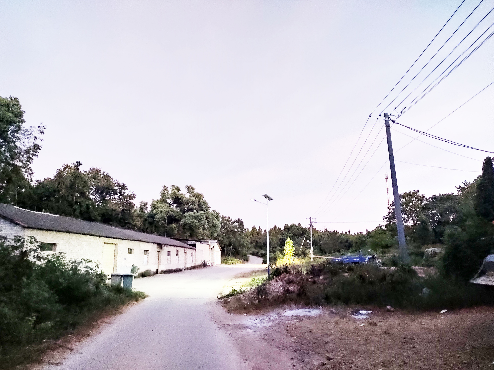

江西宜春
宜丰县石市镇农田

我的家乡潭下村

潭下村位于石市镇西南部，东邻石市村，北与车溪村隔江相望，南邻土桥村，西南与上高县徐家渡交界，村部驻地曰罗家段．离乡政府驻地5公里，320国道穿境而过，建国前夕属风德乡，建国初属宣风区蓼市乡，1958年成立潭下大队．属先锋公社．1969年，划扫石市公社。全村辖小水、潭下、照溪，黄塘下、况家渡五个村民小组：共304户1243人，劳力490人，人均收入1005人。2008年，全村人平纯收入近4000元。
潭下村的农民如今可风光了，随着全市“旅游升温战”的战鼓越擂越响，到村子里走走看看的游客越来越多，过去一些不起眼的土特产品、农副产品如今被游客当成了宝贝。乡村游的兴起让潭下村村民品尝到了“旅游升温战”的甜蜜果实。
近年来，潭下村以旅游开发为主线，以推进新农村建设为契机，带领村民转变观念，大力发展乡村旅游业，使村民的日子越过越红火。目前，全村共开设“农家乐”20多家，从业人员近百人，仅此一项每年为全村村民增收近60万元；开设抬轿、摄影、购物等服务项目多个，从业人员120余人，每年为村民增收近30万元。2008年，全村人平纯收入近4000元。